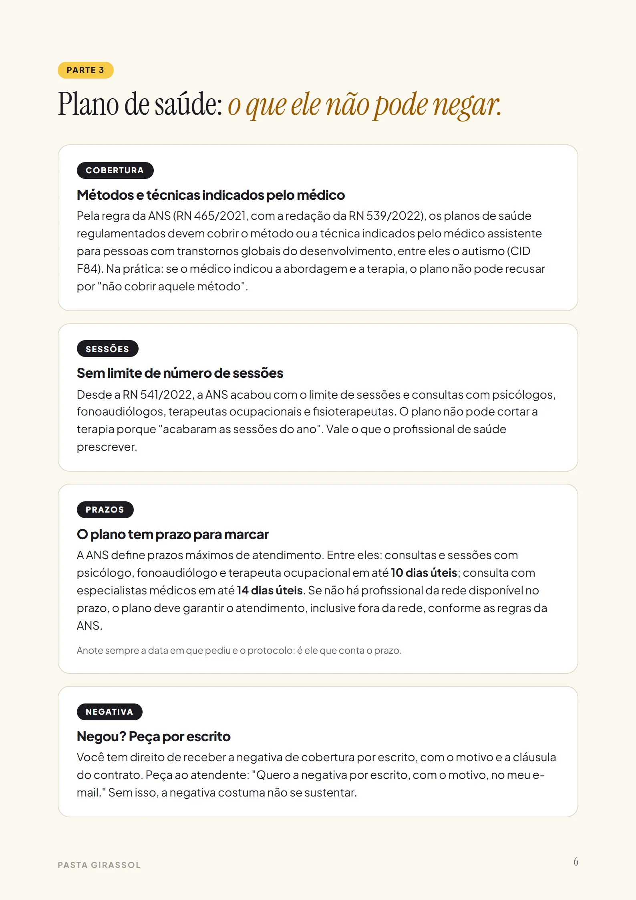
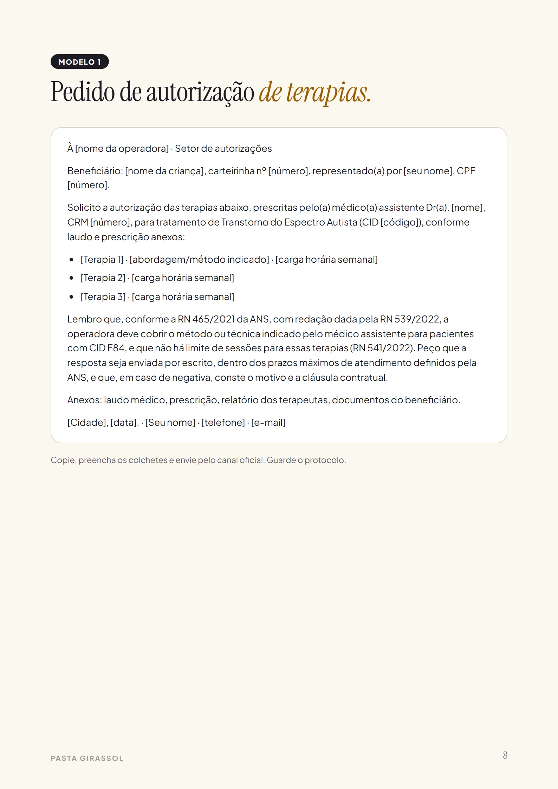
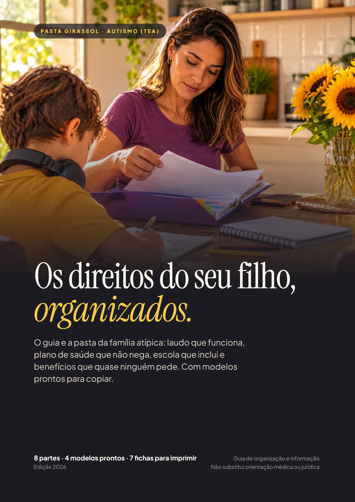
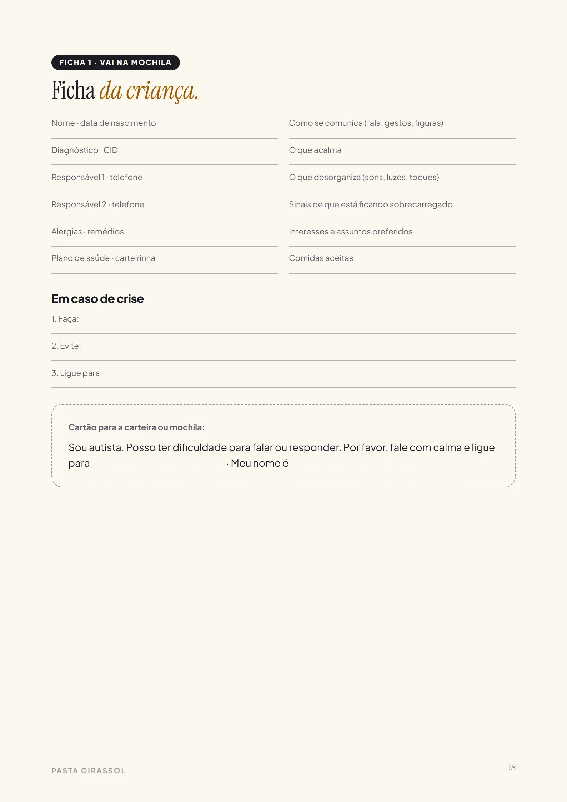
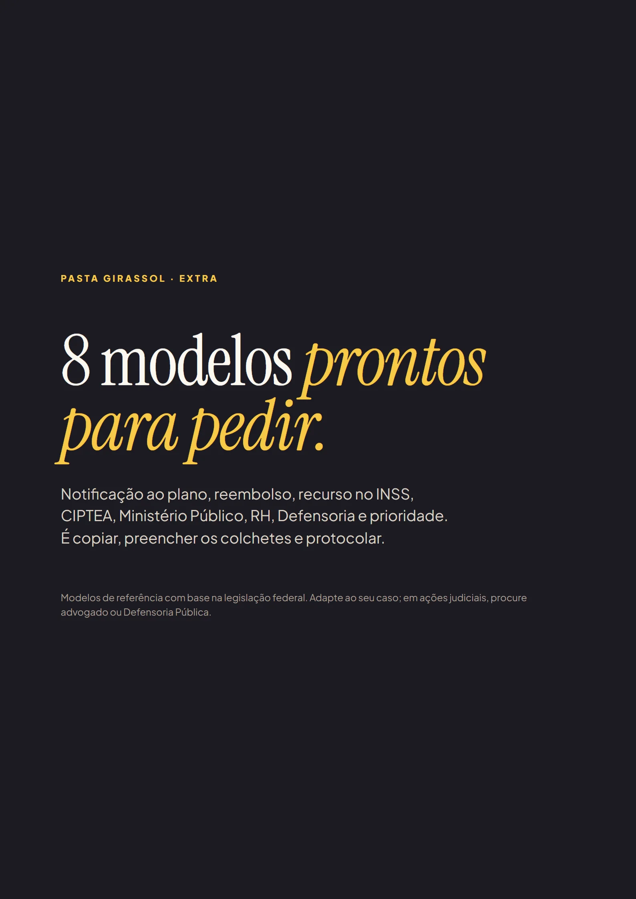

Plano que nega ou corta terapia
Limita sessões, diz que não cobre o método, não tem profissional na rede. E você paga do bolso ou desiste.
Laudo que o plano aceita, terapia que não pode ser cortada, escola que não pode recusar e benefícios que quase ninguém pede. Com os modelos de pedido prontos para copiar.



Laudo, protocolos, pedidos, recibos. Quando tudo está numa pasta só, cada conversa com o plano, a escola ou o INSS muda de tom.
Limita sessões, diz que não cobre o método, não tem profissional na rede. E você paga do bolso ou desiste.
Matrícula difícil, acompanhante negado, adaptação que não acontece. Tudo de boca, nada por escrito.
CIPTEA, BPC, isenção de IPI, desconto no IR, meia-entrada. Cada um num site, com uma regra diferente.
A lista do que guardar em cada divisória, e o checklist do laudo para levar ao médico.
O que a regra diz, a quem pedir e o modelo pronto: é copiar, preencher e protocolar.
A escada da negativa: ouvidoria, ANS, Procon, Ministério Público, Defensoria, com o que levar em cada um.
Este é um trecho real da Pasta. Toque numa situação comum.
Coloque as horas que estão faltando e o valor da sessão particular na sua cidade.
Por ano, pagando do próprio bolso
R$ 0
Estimativa com os seus números (4,3 semanas por mês). Cobertura depende do tipo de plano e da prescrição; a dedução no IR vale na declaração completa e depende da sua faixa de imposto.
24 páginas para ler no celular e imprimir. Toque numa página para ampliar.
Exemplo ilustrativo. O resultado de cada pedido depende do caso, do contrato e de cada órgão; a Pasta organiza o caminho e os documentos.
Autorização de terapias, reclamação na ANS, mensagem à ouvidoria e pedido de acompanhante na escola. Copiar, preencher, protocolar.

Ficha da criança para a mochila, terapias da semana, protocolos, diário de crises, “conhecendo meu filho” para a escola, contatos e gastos para o IR.
O que pedir ao médico que esteja escrito no laudo, para não ter o pedido recusado por um detalhe.

Notificação ao plano, reembolso, recurso do BPC no INSS, CIPTEA, Ministério Público, horário especial, Defensoria e prioridade. Aparece como opcional no pagamento; nada vem marcado.
R$27
Menos que uma sessão particular. Uma vez só, sem mensalidade.
Quero a PastaGarantia de 7 dias. Leia, use os modelos. Se achar que não é para você, peça o reembolso em até 7 dias e recebe 100% do valor, sem perguntas.
No pagamento, aparece como opcional o “Kit com mais 8 modelos”. Nada vem marcado. Pix ou cartão; o acesso chega no seu e-mail logo após o pagamento.
Não. A Pasta é um guia de organização e informação baseado em leis federais e normas públicas. Para ações na Justiça, procure a Defensoria Pública ou um advogado; a Pasta te ajuda a chegar lá com tudo organizado.
Os direitos da Pasta são federais e valem no Brasil todo. Estados e cidades podem dar direitos a mais (como isenção de IPVA ou CIPTEA local), e o guia mostra onde conferir.
Serve. A Parte 2 mostra o que o laudo precisa conter e a Parte 6 mostra onde buscar diagnóstico pelo SUS.
Ninguém pode garantir o resultado de um pedido. A Pasta mostra o que as normas dizem, como pedir e o que fazer se negarem, que é o que mais muda o jogo.
Sim. Plano de saúde, benefícios, isenções e prioridade valem para qualquer idade. A parte de escola é voltada para crianças e adolescentes.
Logo depois do pagamento, você recebe no e-mail o acesso à área de membros da Kiwify com o PDF para baixar, ler no celular e imprimir.
Você tem 7 dias de garantia. Se achar que não é para você, pede o reembolso pela própria Kiwify e recebe 100% do valor.
Pagamento único · garantia de 7 dias · acesso na hora